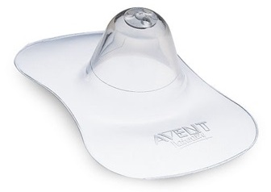

Грудное вскармливание и его преимущества

Несомненно, лучшая пища для новорожденного – это грудное молоко.
Белка в женском молоке достаточно мало, но качественный его состав очень полноценен: 60 % в нём приходится на долю белков молочной сыворотки, которые содержат большое количество жизненно важных и незаменимых для ребёнка аминокислот.
В желудочно-кишечном тракте ребёнка белки женского молока усваиваются значительно лучше и полнее, чем любые другие.
Жир женского молока отличается повышенным содержанием полиненасыщенных жирных кислот, которые обладают высокой биологической активностью (благодаря чему их называют витамином F). При их недостатке дети отстают в физическом развитии и чаще болеют. В жире женского молока растворены также важные для нормальной жизнедеятельности организма витамины А, Д, Е, К. Особенностью женского молока является и высокий уровень ферментов, способствующих перевариванию жира в желудочно-кишечном тракте ребёнка. Важнейший из них – липаза – обеспечивает усвоение почти половины всего молочного жира, что очень важно для нормальной работы пищеварительной системы. Активность собственных ферментов у детей раннего возраста ещё невелика.
Основной углевод женского молока бета-лактоза способен неизменённом виде доходить до толстого кишечника ребёнка и содействовать там формированию нормальной микрофлоры, которая противодействует возбудителям кишечных заболеваний и обеспечивает устойчивую деятельность органов пищеварения. Также благоприятно в женском молоке и соотношение минеральных веществ, в том числе микроэлементов.
Помимо полного набора питательных веществ женское молоко содержит защитные вещества, повышающие иммунобиологическую устойчивость организма ребёнка к инфекциям, к которым он ещё очень чувствителен.
Немаловажную роль играет и то, что ребёнок высасывает молоко из груди тёплым и стерильным. К тому же нельзя недооценивать психологической стороны грудного вскармливания. Психологическая совместимость и взаимопонимание между матерью и ребёнком при грудном вскармливании не только устанавливаются быстрее, но и остаются более прочными спустя многие годы. Наконец, кормление грудью весьма благоприятно и для самой матери, способствуя ускоренной нормализации ряда функций её организма и, в конечном счёте, благотворно действуя на её здоровье.
Женское молоко имеет так много преимуществ по сравнению с его заменителями, что любая мать при отсутствии медицинских противопоказаний просто обязана кормить своего ребёнка грудью, придерживаясь при этом совсем несложных правил гигиены и рационального питания.
ПЕРВОЕ ПРИКЛАДЫВАНИЕ К ГРУДИ
В настоящее время предпочтение отдают раннему первому прикладыванию к груди – в течение первого часа после родов. Физиолог И.А.Аршавский рекомендует кормить ребёнка уже через 20–30 мин после рождения. Проведёнными под его руководством исследованиями показано, что дети, которых кормят сразу после родов, застрахованы от послеродовой потери в весе, от так называемой физиологической желтухи, от загустения крови и уменьшения содержания в ней белка. К тому же, если младенцу сразу же дать грудь, у матери скорее появляется молоко, а у малыша при раннем послеродовом кормлении неблагоприятных изменений не возникает. Разумеется, этот метод применим к доношенным здоровым детям, родившимся в результате неосложнённых родов, при хорошем состоянии матери и ребёнка. В первые несколько дней после родов настоящая лактация практически отсутствует, а из груди выделяется молозиво – клейкая жидкость желтоватого цвета, содержащая белка, витаминов и минеральных солей в несколько раз больше, чем зрелое молоко. Затем грудные железы начинают продуцировать так называемое переходное молоко, которое лишь на 2–3-й неделе лактации становится зрелым.
Молозиво очень полезно для ребёнка в первую очередь из-за большого содержания в нём иммуноглобулина А, предохраняющего желудочно-кишечный тракт от интенсивного бактериального обсеменения. Кроме того, даже с несколькими каплями молозива ребёнок получает определённое количество белка, обладающего большой биологической ценностью.
При различных патологических состояниях у ребёнка, а также при осложнённых родах время первого прикладывания к груди определяет врач-педиатр индивидуально.
ЗАТРУДНЕНИЯ ПРИ КОРМЛЕНИИ ГРУДЬЮ
Однако не всегда грудное вскармливание дается легко и матери и ребенку. Какие трудности могут возникнуть? Рассмотрим подробнее.
Грудное кормление становится затруднительным из-за целого ряда причин. Со стороны матери часто это связано с неправильной формой сосков (малые, плоские, втянутые). Ребёнок с трудом охватывает такие соски губами, и поэтому эффективность сосания значительно снижается. К тому же малыш во время кормления постоянно подсасывает воздух, который переполняет желудок и вызывает срыгивания и рвоту. При этом неполное высасывание молока из груди может приводить к его застою, понижению секреции и даже прекращению его выделения. Для преодоления указанного затруднения часто будущей матери уже за 2–3 недели до родов рекомендуется 3 раза в день вытягивать соски. Вымыв с мылом руки и молочные железы и тщательно просушив их, женщина тремя пальцами нежно охватывает сосок и осторожно оттягивает его на 3–4 мин, стараясь не травмировать.
После кормления необходимо подержать ребенка в вертикальном положении, так выйдет заглоченный воздух. Если соски так и остались неправильной формы, после консультации с врачом, можно использовать насадки на грудь для кормления. Например, силиконовые насадки. Это очень тонкие и гибкие пластины, более плотные в области соска.
Поскольку силикон очень тонок, ареоле передается больше стимуляции при сосании, и объем молока не настолько серьезно сокращается, как в случае использования других накладок. Силиконовые накладки являются более предпочтительными еще и потому, что во всем мире учащаются случаи появления аллергических реакций на латекс.
Во время кормления грудью ребёнок может наглотаться воздуха и при нормальной форме сосков, но неправильном их захватывании, а также при активном сосании. Проглоченный воздух может вызывать у ребёнка вздутие живота, кишечные колики, беспокойство, нарушение сна. Во избежание этого после кормления необходимо дать малышу возможность срыгнуть проглоченный воздух, подержав его несколько минут в вертикальном положении.
Срыгивания у грудных детей встречаются довольно часто, что обусловлено особенностями их желудка, слабостью мускулатуры той его части, которая соединяется с пищеводом. Поэтому любое переполнение желудка вызывает обратное поступление содержимого из желудка в пищевод и дальше в ротовую полость, что проявляется срыгиванием. Это – до некоторой степени защитная реакция организма от перерастяжения желудка. Многие дети активно сосут и, не чувствуя насыщения при избыточном количестве молока у матери, переедают. Нередко срыгивания могут быть начальными симптомами заболевания ребёнка, поэтому при упорных срыгиваниях следует обратиться к врачу, который правильно оценит состояние ребёнка.
Грудное кормление может быть очень болезненно для матери при наличии на сосках ссадин и трещин. При небольших трещинах ребёнка следует кормить через накладку; при больших – кормление надо временно прекратить, а сцеженное из груди молоко давать ребёнку без термической обработки.
Грудное кормление затрудняется при закупорке протоков молочной железы. Образующийся застой молока вызывает болезненные ощущения (порой очень сильные) у матери и снижает эффективность сосания у ребёнка. Обратное этому явление – галакторея (самопроизвольное истечение молока из груди) также создаёт препятствия для кормления грудью. При сосании ребёнок захлёбывается молоком, поперхивается, начинает кашлять и нередко срыгивает высосанное молоко. В этом случае целесообразно сначала сцедить часть молока и только после этого приложить ребёнка к груди, докормив его при необходимости сцеженным молоком.
Кормление грудью часто затрудняется по причинам, связанным с наличием у ребёнка пороков развития, например расщелины верхней губы («заячья губа») или верхнего нёба («волчья пасть»). Если эти дефекты небольшие, то они, как правило, не осложняют грудное кормление. При обширных же дефектах ребёнка следует кормить сцеженным молоком из ложечки или через соску. Препятствием к вскармливанию грудью могут явиться дефекты развития нижней челюсти ребёнка (либо она очень маленькая, либо слишком большая). Из-за неправильного прикуса ребёнок не может эффективно высасывать молоко из груди, особенно если имеются сопутствующие дефекты сосков, и тогда его необходимо кормить через накладку либо из соски. Эффективность сосания снижается и из-за короткой уздечки языка. Однако со временем при кормлении грудью уздечка растягивается, и это затруднение исчезает. Если же этого не происходит, то необходимо обратиться к хирургу детской поликлиники, который устранит дефект.
Значительные трудности возникают при появлении у ребёнка на слизистой оболочке рта и языка молочницы. После нескольких сосательных движений малыш обычно отказывается от груди из-за резкой болезненности; Для удаления молочницы необходимо несколько раз обработать рот 2-процентным тёплым водным раствором пищевой соды (1 чайная ложка соды на стакан кипячёной воды) или раствором буры в глицерине (продаётся в аптеке).
Активному сосанию может препятствовать затруднённое носовое дыхание. Ребёнок вынужден периодически отрываться от груди, чтобы вдохнуть воздух ртом. При этом он обычно заглатывает воздух в желудок, что может привести к срыгиванию молока и далее рвоте. Поэтому перед каждым кормлением носовые ходы малыша следует освободить от слизи и корочек с помощью сухих ватных жгутиков.
При упорном отказе ребёнка от груди необходимо обратиться к врачу-педиатру, так как это нередко является первым признаком заболевания.
Правильный уход за молочными железами предотвращает их заболевания и способствует успеху грудного вскармливания.
О том, как правильно прикладывать ребенка к груди, мы расскажем в следующей статье.